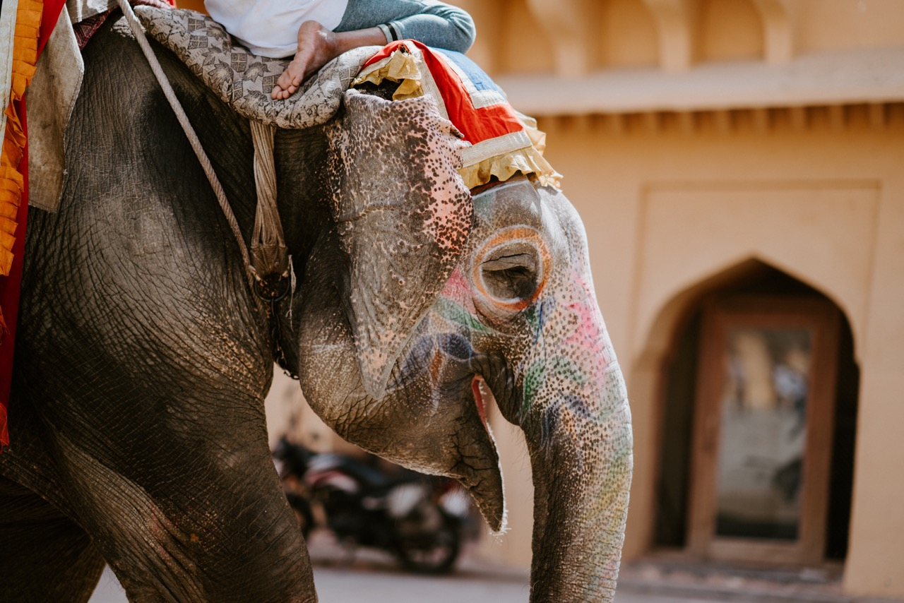
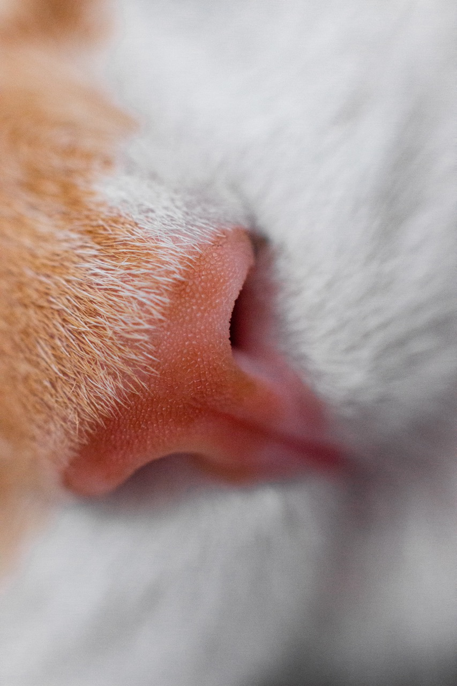
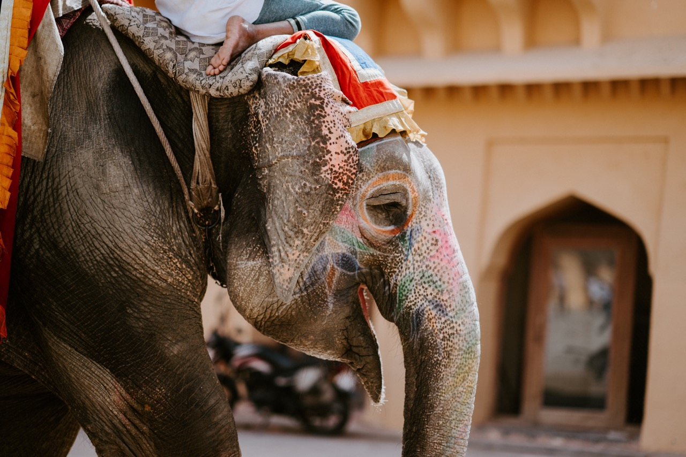
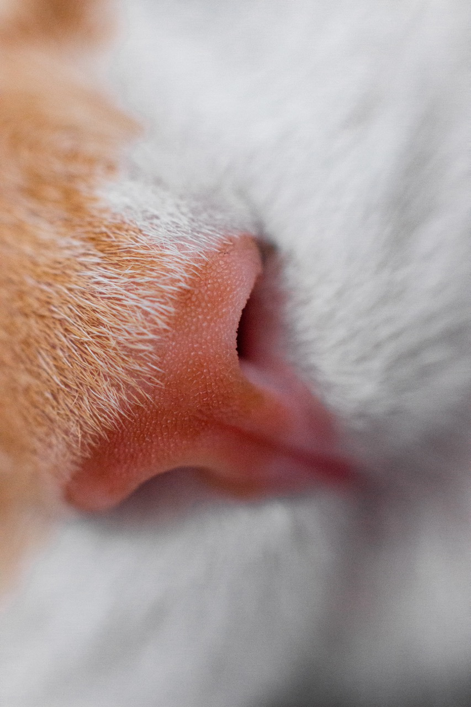

According to the dictionary, nature is the phenomena of the physical world collectively, including plants, animals, the landscape, and other features and products of the earth, as opposed to humans or human creations; nature is the basic or inherent features of something, especially when seen as characteristic of it. If an object, a person, or a place owns an identity in the world, it must have its nature. A country, a community, or a group possesses its nature as well. Nature has been submerged by abundant information and the rapid revolution of societies.
As if human beings are put in the context of nature, it is neglected and distorted due to massive digitalization in the 21st century. “Natural” look defines the original appearance of a human being or a living creature, without any chemical and technological interference. “Natural” personality defines an individual’s true self, beyond good and bad, a time-consuming navigation for all mankind. On the other hand, if collective groups are put in the context of nature, motivation and intention are the keys to explaining their nature. It all starts with one point and then expands to a plane. No matter how the plane expands, the central focus does not change. In other words, the nature of a collective group supports its existence.


“We are like other animals; we live and die as they do. If there is any afterlife, I believe we are in together.”


 
"Being in the country is like being in a dream – one doesn’t quite know who one is. There is an anonymity to it all – that strange human creature that is me, one among all."
“I don't love Photoshop; I like imperfection. It doesn't mean ugly. I love a girl with a gap between her teeth, versus perfect white veneers. Perfection is just... boring. Perfect is what's natural or real; that is beauty.”
by Elinor Wylie
Say not of beauty she is good,
Or aught but beautiful,
Or sleek to doves’ wings of the wood
Her wild wings of a gull.Call her not wicked; that word’s touch
Consumes her like a curse;But love her not too much, too much,For that is even worse.O, she is neither good nor bad,
But innocent and wild!
Enshrine her and she dies, who had
The hard heart of a child.

by William Wordsworth
I wandered lonely as a cloud
That floats on high o'er vales and hills,
When all at once I saw a crowd,
A host, of golden daffodils;
Beside the lake, beneath the trees,
Fluttering and dancing in the breeze.
Continuous as the stars that shine
And twinkle on the milky way,
They stretched in never-ending line
Along the margin of a bay:
Ten thousand saw I at a glance,
Tossing their heads in sprightly dance.
The waves beside them danced; but they
Out-did the sparkling waves in glee:
A poet could not but be gay,
In such a jocund company:
I gazed—and gazed—but little thought
What wealth the show to me had brought:
For oft, when on my couch I lie
In vacant or in pensive mood,
They flash upon that inward eye
Which is the bliss of solitude;
And then my heart with pleasure fills,
And dances with the daffodils.